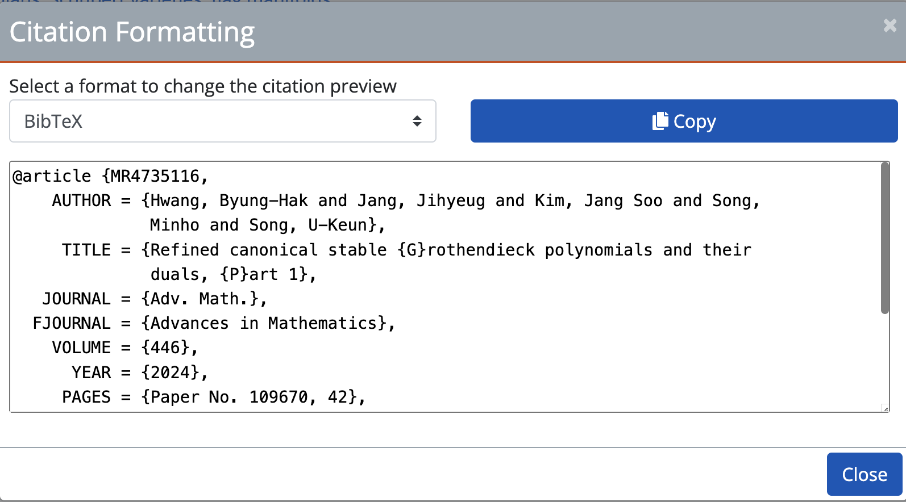

Newbiemacs Tutorial
Table of Contents
1. Manage pdf files
1.1. How to add a pdf file from arxiv
- Download the pdf file of a paper from https://arxiv.org/ (You must download it into your download folder instead of just viewing it on your browser.)
Copy the two lines of the title and the authors like this:

- Go to your Emacs with the Newbiemacs main screen.
- Type
mand follow the instructions at the bottom of Emacs screen. - It will save a pdf with name scheme such as "Author 1, Authur 2, Title".
- Now you can search the pdf by typing
pin on the Newbiemacs main screen.
1.2. How to add a pdf file that has been published
- Download a pdf file into your download folder.
- Go to MathSciNet or its beta version. (The beta version is more convenient.)
Search the paper there. You will see something like this

Click the drop-down box at the top left corner and select bibtex.

Copy the bibtex item.

- Go to your Emacs with the Newbiemacs main screen.
- Type
mand follow the instructions at the bottom of Emacs screen. - It will save a pdf with name scheme such as "Author 1, Authur 2, Year, Title".
- Now you can search the pdf by typing
pin on the Newbiemacs main screen.
1.3. How to find a pdf file
- Go to your Emacs with the Newbiemacs main screen.
- Type
pand type anything that you can remember about the authors or title. - It will list all papers with the key words that you have written there.
- Choose the pdf that you want to open and press the enter key.
2. More information will be updated soon!
3. FAQ
3.1. How can I change the newbiemacs folder?
- Close Emacs and move the newbiemacs folder as you wish.
- Open
~/nbm-root/nbm-home.txt. (This is the file containing the path to the Newbiemacs folder.) - Update the old path with the new path.
- Start Emacs.
3.2. How can I update Newbiemacs?
- Type
SPC N r
3.3. How can I open the Newbiemacs directory?
- Type
Backspacetwice and then typeF